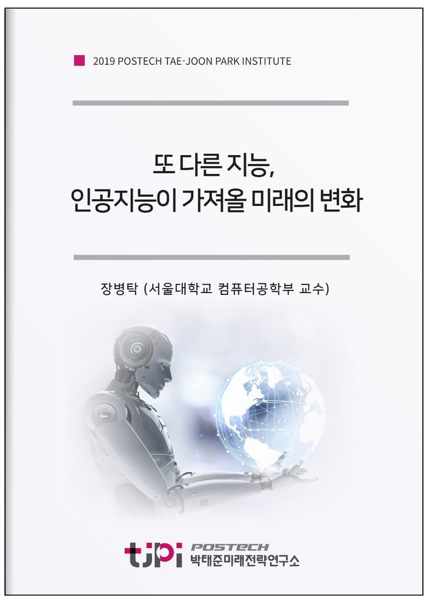

저자 장병탁 (서울대학교 컴퓨터공학부 교수)보도일 2019-11-30

요 약
알파고
자율주행자동차
왓슨
스마트 스피커 등 최근 인공지능 기술이 급속도로 발전하고 있다
그런데 인공지능은 단순히 기술과 산업의 발전 뿐만 아니라 사회 전반에 걸쳐서 폭 넓은 변화를 가져올 새로운 동력으로 주목받고 있다
이에 인공지능이 가져올 미래 사회 변화를 이해하기 위해서는 일반인들도 인공지능의 기술적 기반을 이해하고 미래에 대비할 필요가 있다
인공지능의 개념
원리
기술적 기반
활용 사례 등을 통해서 알기 쉬운 수준으로 인공지능의 핵심 개념을 설명하고
인공지능의 최신 발전 동향과 미래를 조망함으로써 글로벌 변화를 예측할 수 있는 기반을 제공 한다.
마지막으로 한국의 특수한 상황을 고려하여 인공지능을 활용하여 미래에 개인의 삶이 더 행복하고 사회가 더 윤택해질 수 있는 방안을 제시한다.
------ 요약 ------
사람이 프로그램하는 인공지능의 시대에서 기계가 스스로 학습하는 인공지능의 시대가 도래하였다. 인간만의 고유한 영역이라고 여겼던 문제들이 빅데이터 기반의 딥러닝 인공지능에 의해 정복되고 있다. 아직까지는 가상의 디지털 공간에서의 이야기다. 그러나 인공지능이 물리적인 세계로 나오고 있다. 가상의 인공지능이 사물인터넷으로 연결되어 실세계를 지각하고 실세계에 행동하는 체화, 확장된 인지 능력을 지닌 새로운 인공지능이 탄생하고 있다. 이는 가히 “또 다른 지능”이라고 부를 만큼 새로운 종의 인공지능이다.
이 글에서는 또 다른 지능의 시대가 가져올 미래 세상의 모습을 조망해 본다. 또 다른 지능은 가상세계뿐만 아니라 현실세계에서의 우리의 삶, 일, 여가의 모든 영역을 다루기 때문에 인류 진화의 방향을 바꿀 만큼 큰 변화를 야기할 것이다. 또 다른 지능의 시대에 대두될 새로운 문제들과 우리 인간이 행복하게 살아남기 위해서 취해야 할 인공지능과의 관계에 대해서 논의한다.
목 차
1. 인공지능 50년을 돌아보며
2. 기계도 생각하고 학습한다.
3. 인간지능과 인공지능은 유사하나 다르다.
4. 또 다른 지능의 시대
5. 다음 50년의 미래사회 엿보기
6. 또 다른 지능과 행복하게 살아가기
내 용
[2019 연구논문] 또 다른 지능, 인공지능이 가져올 미래의 변화
장병탁 (서울대학교 컴퓨터공학부 교수)
- 원문은 미래전략연구총서12 [또 다른 지능, 다음 50년의 행복]로 발간되었습니다.